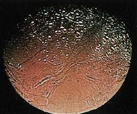

IMPACT CRATERING
The picture above shows a region about 90 miles long on the surface of
the Earth's Moon. Typical, medium-sized impact craters in the picture
are about 3 miles across. There is hardly a square mile of the Moon's
surface which has not been badly affected by a significant impact
event.
The area shown is slightly larger than the distance between
Charlottesville and Richmond.
Imagine that the Earth's surface had been subjected to the same
history of asteroid impacts as the Moon and that you are looking at a
picture of central Virginia. Awesome destruction, yes?
But this picture DOES REPRESENT THE AREAL DENSITY
OF IMPACTS ON THE EARTH'S SURFACE:
- The Earth and Moon orbit the Sun at the same distance. The flux
(i.e. number per square mile per million years) of solid bodies across their
orbits is the same. This is the main determinant of impact rate.
- In fact, because of its higher gravity, the Earth will be subject to yet
more impacts than the Moon.
The only reason we are unaware of this ferocious impact history by
looking around us is that the Earth's surface has been continually
renewed by plate tectonics and eroded by weathering.

All the solid solar system bodies which lack weathering show similar
impact-scarred surfaces. For a comparison, click on the picture above.
Here are more images of impact surface features:
Text copyright © 2003-2015 by R. W. O'Connell. All rights
reserved. Last modified
November 2007 by rwo
 Guide 22
Guide 22
 Guide Index
Guide Index